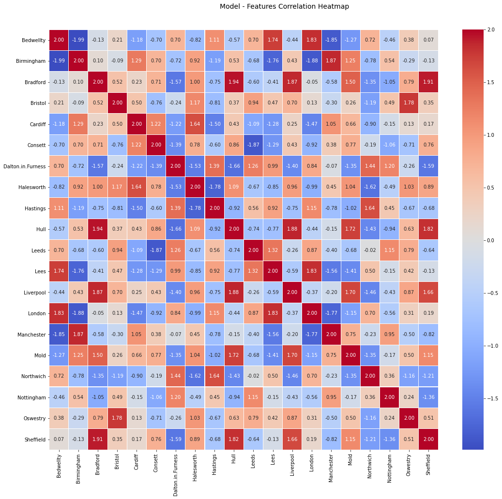

Welcome to IMT Epidemic Models’s documentation!¶


Este projeto tem o objetivo de divulgar como desenvolver modelos para epidemias, desde sua modelagem matemática até sua concepção computacional em Python. Sendo assim composto por videos explicativos, notebooks em Python, e diversas visualizações, para ajudar com o entendimento do conteúdo apresentado.
Alguns resultados do século XX…¶
Para dar um gosto do conteúdo aprensentado, foi desenvolvida uma análise com dados do Reino Unido (United Kingdom), e utilizando os modelos aqui desenvolvidos, é possível obter previsões do comportamento dos dados. Essas previsões, juntamente com os dados reias, estão apresentadas na figura a seguir:
Assim como o estudo de correlação entre os modelos SIR obtidos para cada uma das cidades durante os períodos de epidemias do Reino Unido:
{kind=link}
Previsões do COVID¶
Nesta análise utilizamos o modelo desenvolvido para tentar prever os comportamentos do COVID. Para isso, primeiramente utilizamos dados de países que já apresentam um comportamento característico da estrutura SIR, e já estão em seu final. Desta forma podemos validar o modelo com relação a sua capacidade de prever eventos futuros, mesmo que somente poucos dias de dados sejam utilizados. Desta forma algumas análises específicas, e de maior impacto, são apresentadas nessa primeira página:
Determinação do número básico de reprodução \(R_0\) no decorrer da epidemia
Previsão da quantidade de infectados notificados no sistema público
Previsão do momento de pico da epidemia
No caso, essas análises foram feitas para Itália 🇮🇹, China 🇨🇳 e Alemanha 🇩🇪, países que já estão em seu período de diminuição do nível de infectados. Para dar um gosto sobre a capacidade de previsão do algoritmo de aprendizado desenvolvido, nas visualizações a seguir nós mostramos a previsão feita pelo algoritmo para cada país a medida que os tempo da epidemia foi passando e mais dados foram utilizados para a aprendizagem:
Nosso modelo aprende com algoritmos de otimização os parâmetros da estrutura SIR, juntamente com a proporção da população que está sendo registrada pelo sistema de saúde. No caso, ele aprende três parâmetros fundamentais do modelo: \(\beta\) (contatos por dia), \(r\) (em que \(1/r\) é o tempo médio de recuperação da doença), e o \(S(0)\) (quantidade inicial de suscetíveis), para que a epidemia tenha o comportamento que os dados mostram. No caso os valores ajustados para cada país foram:
País
\(\beta\)
\(r\)
Itália 🇮🇹
0.2038
0.0233
China 🇨🇳
0.3133
0.0445
Alemanha 🇩🇪
0.2195
0.0576
País |
\(\beta\) |
\(r\) |
|---|---|---|
Itália 🇮🇹 |
0.2038 |
0.0233 |
China 🇨🇳 |
0.3133 |
0.0445 |
Alemanha 🇩🇪 |
0.2195 |
0.0576 |
Caso você mesmo queira se divertir e tentar ajustar os parâmetros, é possível, clicando no botão abaixo!
Determinação do \(R_0\)¶
Note que o parâmetro \(R_0\), é determinado a partir dos dois outros característicos do modelo SIR, \(R_0 = \beta / r\). Aqui utilizamos um modelo SIR que pondera a quantidade de suscetíveis, uma vez que nem toda a população pode ser considerada suscetível, visto que nem todas as pessoas infectadas, e recuperadas são notificadas ao sistema público. E nem toda a população é alcançavel ao vírus, devido a políticas públicas, isolamentos …
Note
Desta forma note, que o modelo desenvolvido somente modela as pessoas notificadas pelo sistema de saúde, sendo assim, representativo de uma parte da verdade situação do país.
Dito isso, é possível definir os valores encontrados pelo algoritmo de aprendizagem para o parâmetro \(R_0\) a medida que os dias da pandemia passaram:
Previsões do consumo do sistema público¶
Um dos parâmetros que nosso algoritmo aprende durante seu processo de treinamento, é um parâmetro que pondera a quantidade da população de suscetíveis inicial (simplesmente uma técnica para melhorar o condicionamento númerico do algoritmo). Porém, com esse parâmetro tende sempre a estimar o valor de \(S(0)\) igual ao valor de \(R(\infty)\). Note que sempre é verdade \(S(0) \geq R(\infty)\). Como os dados medidos são somente das pessoas notificadas e acompanhadas pelo sistema de saúde, podemos concluir que o valor de \(R(\infty)\) é a quantidade de pessoas que foram contamindas, e frequentaram o sistema de saúde para o diagnóstico, e por isso estão na base de dados. Nosso algoritmo prevê a quantidade de \(S(0) = R(\infty)\), desta forma para cada novo dia de dados temos uma nova previsão de qual será a quantidade de pessoas que consumirão o sistema de saúde. Nos gráficos a seguir conseguimos mostrar o erro percentual entre o real valor de \(R(\infty)\) e o valor estimado por nosso modelo a cada dia da epidemia:
Previsões dos picos epidêmicos do COVID¶
Nesta análise apresentamos o efeito da quantidade de dados na performance do modelo desenvolvido analisando a capacidade de prever o dia em que acontecerá o pico da quantidade de infectados da epidemia do COVID. Para isso estamos utilizando dados de países que já tiveram seu pico de contágio, e atualmente estão no período de amortecimento da quantidade de infectados. Alguns dos países analisados foram a China 🇨🇳, Itália 🇮🇹 e Alemanha 🇩🇪, que possibilitaram as análises abaixo. Nestas figuras é mostrado o erro do modelo ao tentar prever o dia de pico, para cada dia decorrente da epidemia:
Modelos COVID Brasil 🇧🇷¶
And, by the way…
Em construção…
Modelos Analíticos
Modelos Estocásticos
Baseados em Dados
COVID
Code APIs